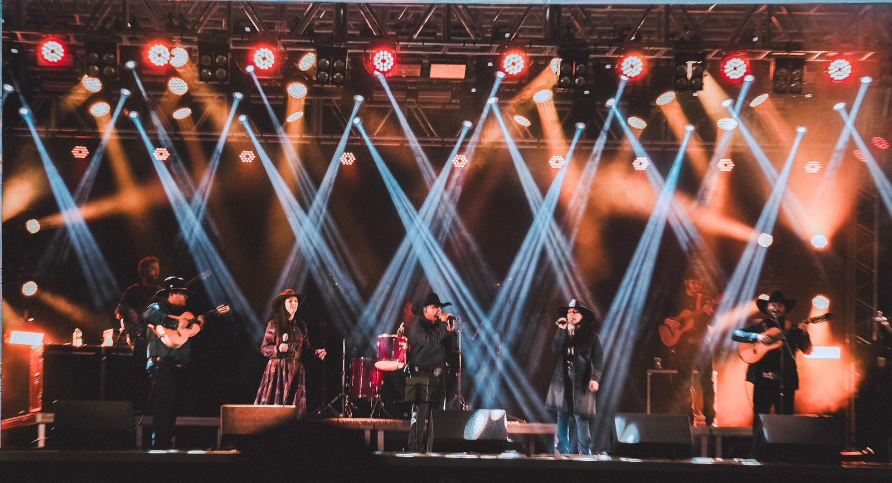
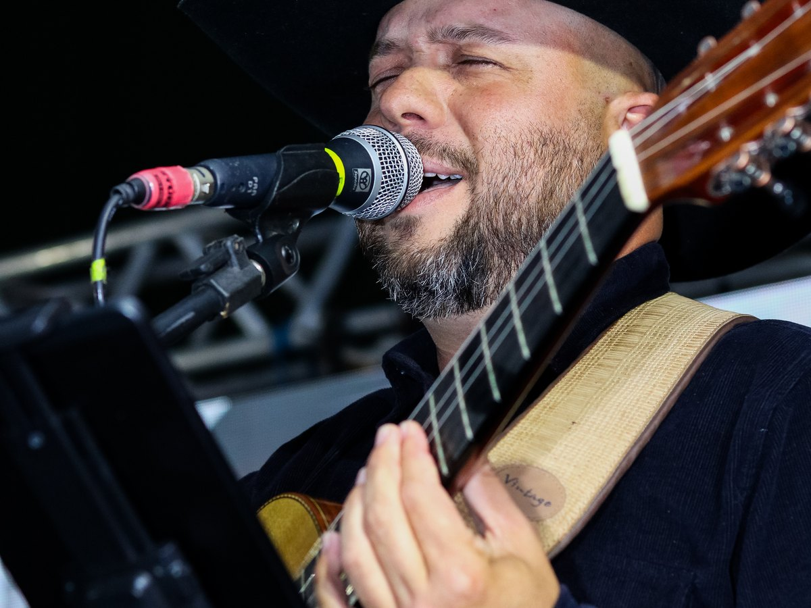
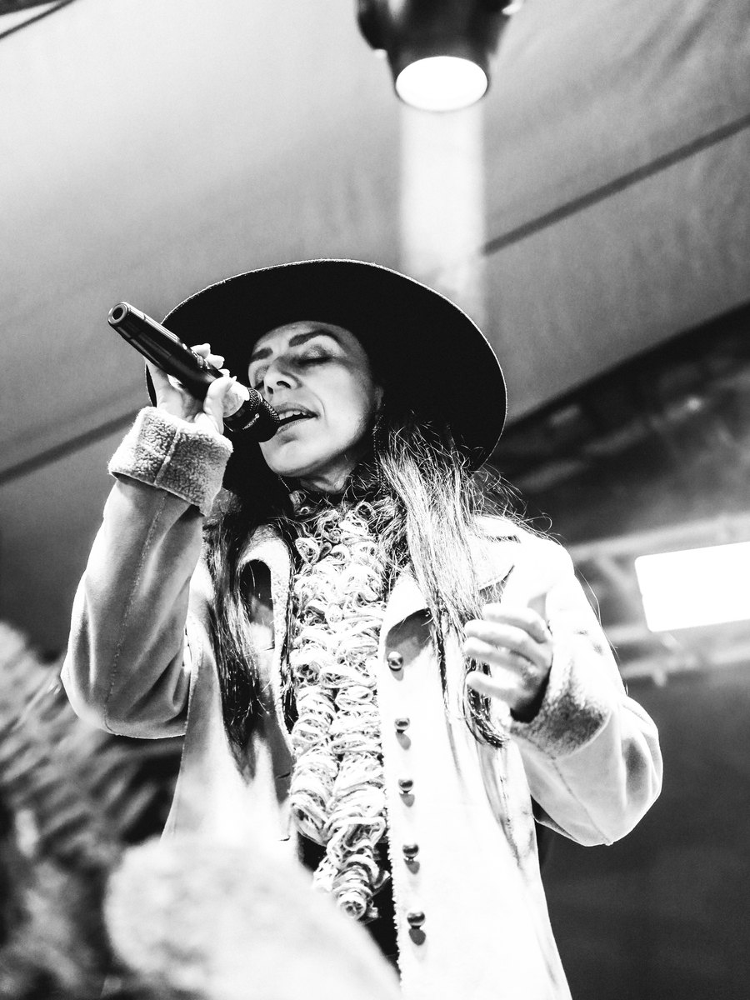
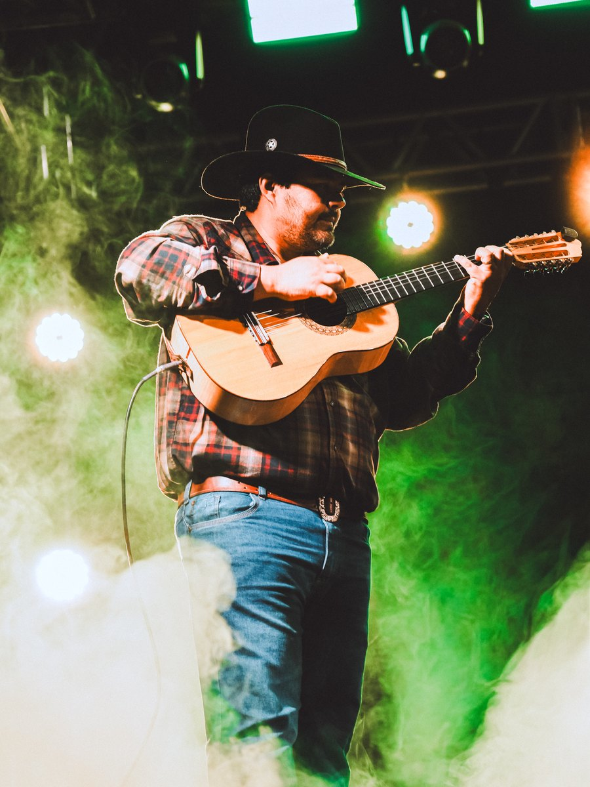
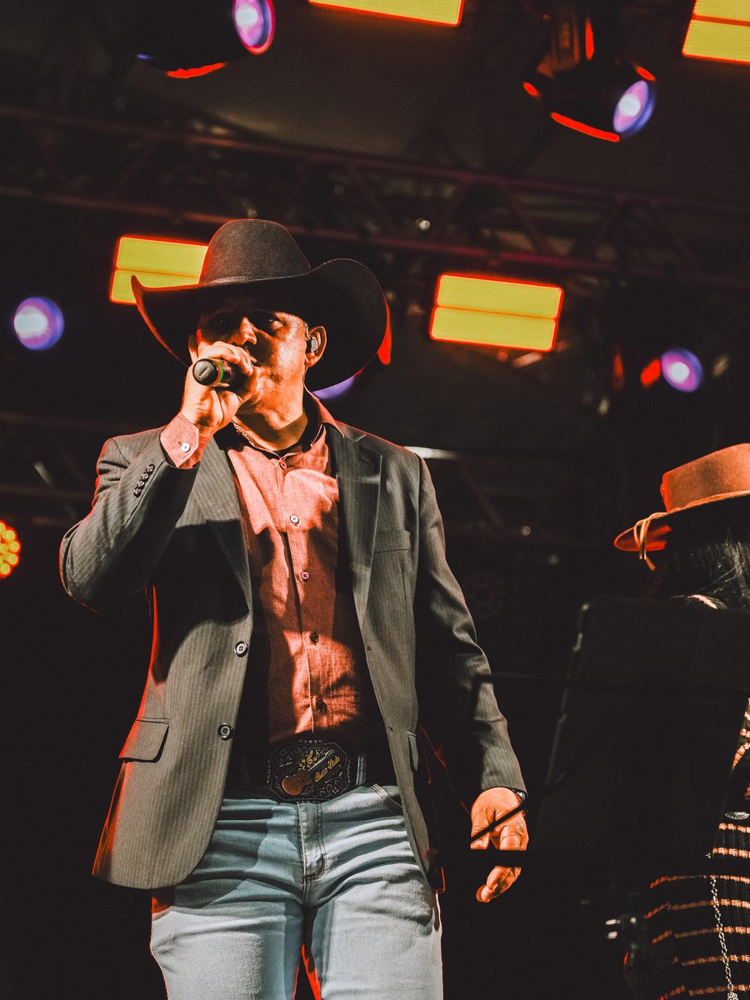
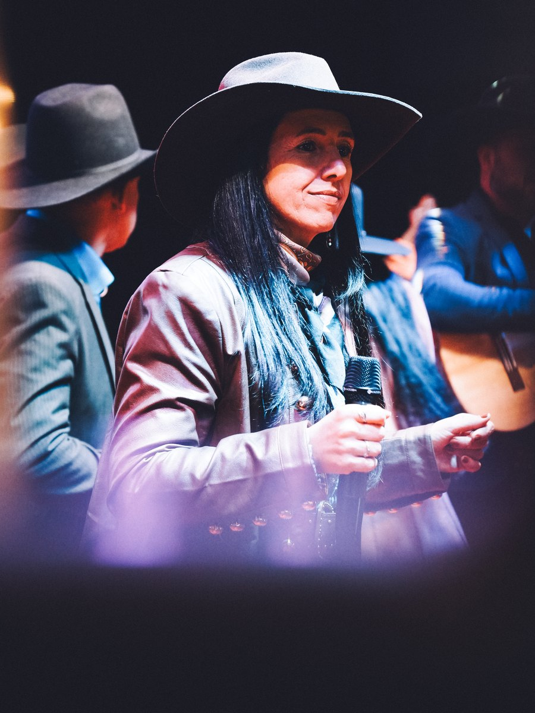

Música caipira • emoção • espetáculo
A tradição ganha
novos acordes.
A força da viola, vozes marcantes e um show feito para cantar, dançar e se emocionar.
Contrate o showDesde 2022
Raízes que atravessam gerações
O Violeiros da Terra nasceu do desejo de honrar os grandes mestres da música caipira e levar essa herança para novos públicos.
Da tradição de Tião Carreiro e Goiano às influências do sertanejo, country, MPB, rock e música clássica, o grupo constrói uma sonoridade própria: autêntica como o interior do Brasil e vibrante como os grandes palcos.
São vozes que se encontram em duetos marcantes, arranjos que surpreendem e a viola caipira ocupando o lugar que merece: o centro da cena.
Uma experiência completa
Um show para sentir
do primeiro ao último acorde
Durante cerca de duas horas, clássicos, encontros inesperados e interpretações únicas conduzem o público por uma jornada que celebra a cultura caipira.
espetáculo
e duetos únicos
viola protagonista
No repertório
Chora ViolaCaminheiroPorta do MundoMerceditaVide Vida MarvadaA Majestade, o Sabiá
e muitos outros clássicos em releituras cheias de personalidade.
Nos palcos
A música acontece ao vivo
Cada apresentação é um encontro entre histórias, gerações e a emoção de quem vive a música de verdade.




